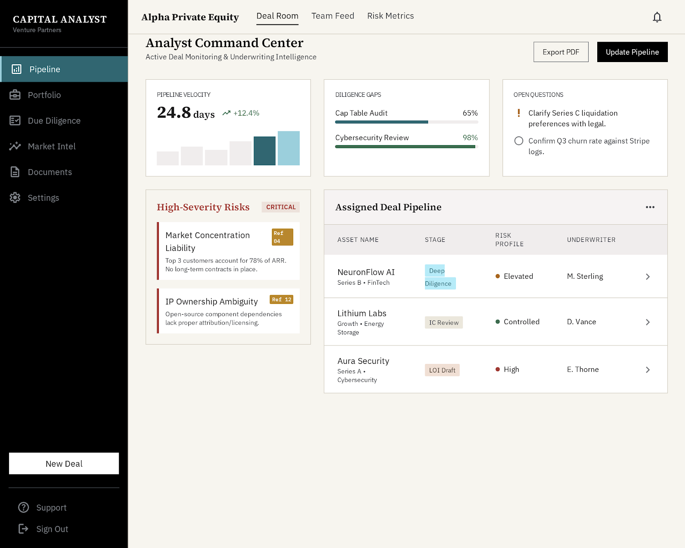
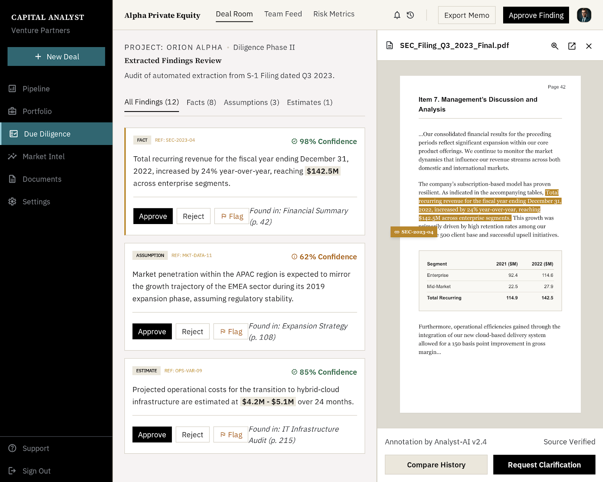
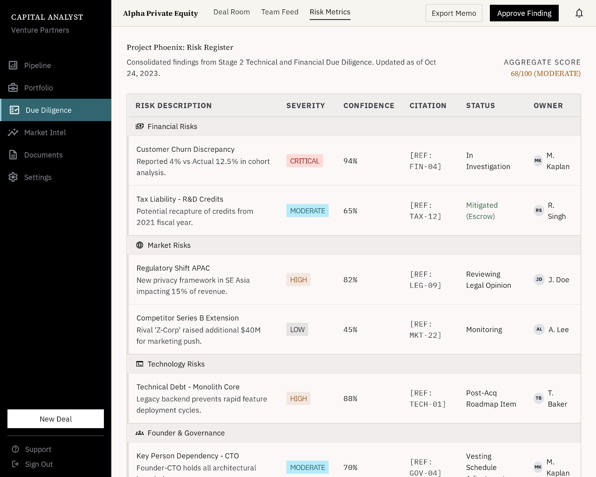
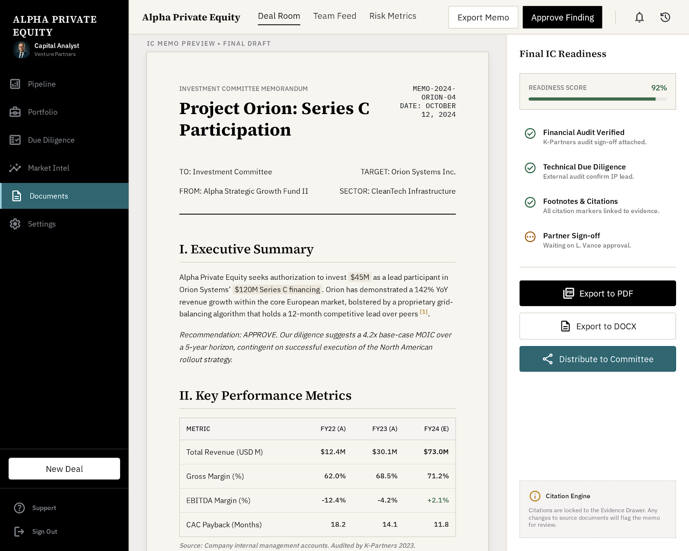

Enterprise deal intelligence
Blue Torch.me
A source-grounded workspace for investment teams reviewing deals, risks, diligence gaps, and investment committee memo drafts.
Workflow
From intake to IC-ready memo.
-
01
Intake
Upload source materials, set confidentiality, assign reviewers.
-
02
Extract
Create facts, assumptions, estimates, risks, and missing evidence.
-
03
Review
Approve, reject, edit, or escalate each generated object.
-
04
Export
Move approved analysis into a cited investment memo.
Why not just ChatGPT
Analysis is governed as evidence, not chat text.
Generic LLM tools can summarize. Blue Torch.me keeps the deal workflow controlled: permissions, citations, review states, lifecycle events, audit history, and export-ready memo structure.
Every insight must point to source material or a stated assumption.
Findings carry confidence so reviewers can prioritize scrutiny.
Facts, assumptions, estimates, risks, recommendations, questions.
New, needs review, approved, rejected, escalated, superseded.



Built for investment committees